神在祭中の命主社です。
2024/11/16
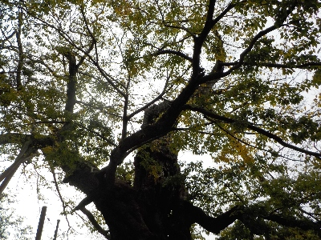
出雲大社のすく近くですが、神在祭中はここに神様はいるのかな？知らないなー。
ムクノキは葉っぱの数が減っていました。
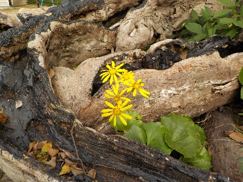
ムクノキの根っこの間からツワブキの花が出ていました。秋ですね。
島根県出雲市大社町杵築東185
2024/11/16

出雲大社のすく近くですが、神在祭中はここに神様はいるのかな？知らないなー。
ムクノキは葉っぱの数が減っていました。

ムクノキの根っこの間からツワブキの花が出ていました。秋ですね。
2024/08/09
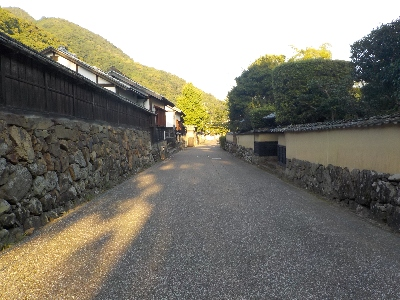
前月見たアオバズクをもう一度見たいと思い命主社に行きました。
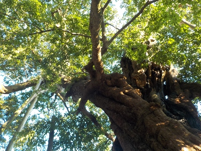
今日は見つけられませんでした。
2024/07/21
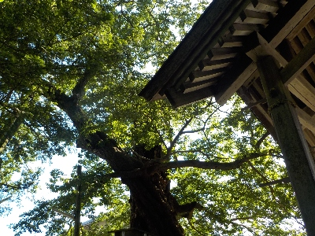
天気が良かったので散歩です。
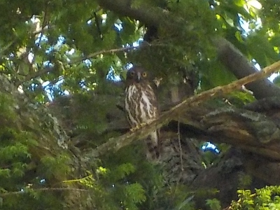
アオバズクがいました。先月も見たんですが、その個体より小さい気がします。
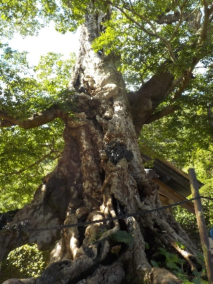
天気いいと緑がキレイですね。
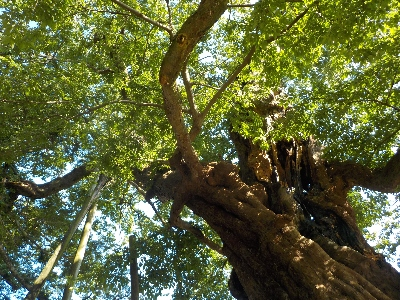
蚊に刺されたけど、いい景色が見れて良かったです。
2024/06/08
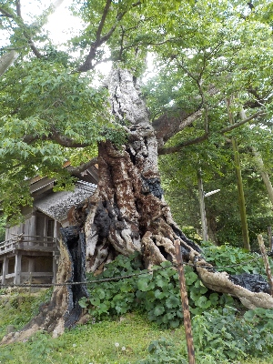
日が当たっているムクノキです。
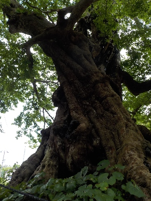
日陰側から見たムクノキです。
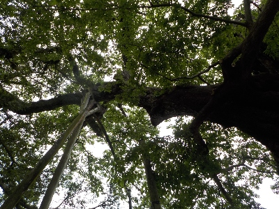
日陰から見上げたムクノキです。
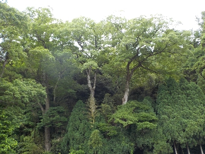
近くの木々も緑がキレイでした。迫ってくる感じがしました。
2023/02/23
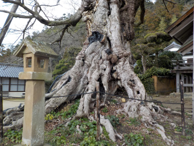
巨木を見に行きました。
ごっつい木です。
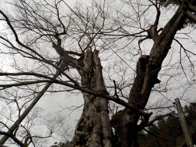
冬なので葉っぱがありません。
季節ごとの姿を見たいので、たぶん今後何度もこの木を見に行くと思います。
神社の奥に巨石があるとインスタで見たので行こうと思いましたが、立ち入り禁止っぽかったにで止めました。